×
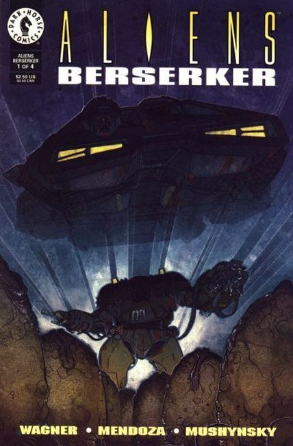
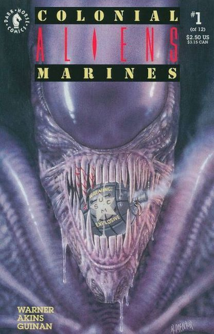
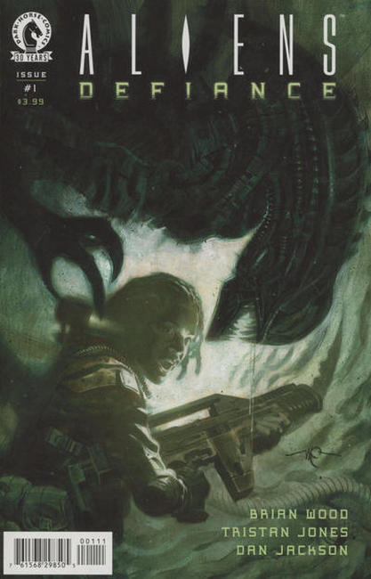
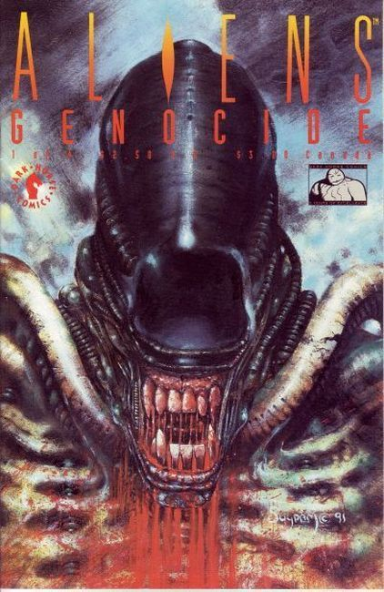
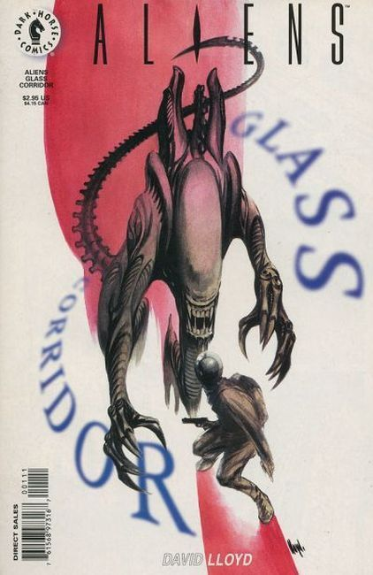
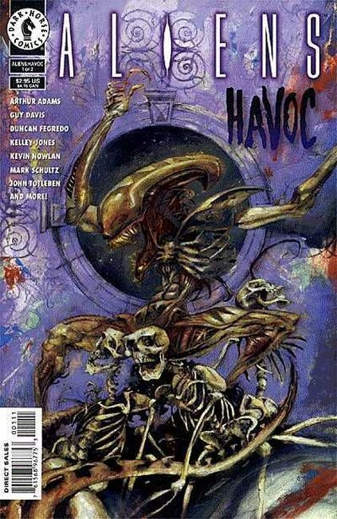
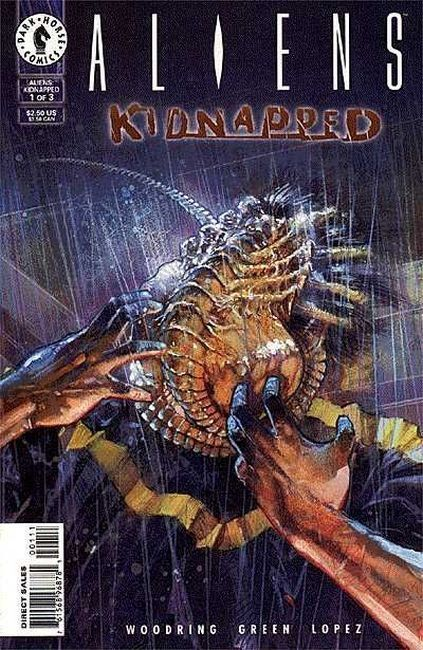
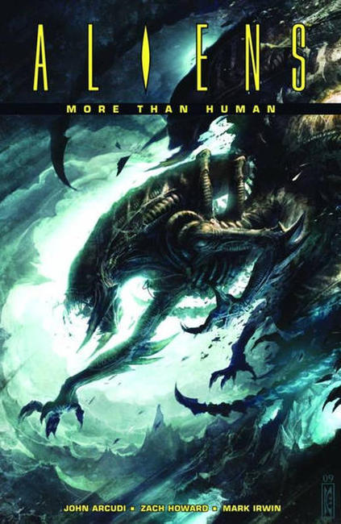
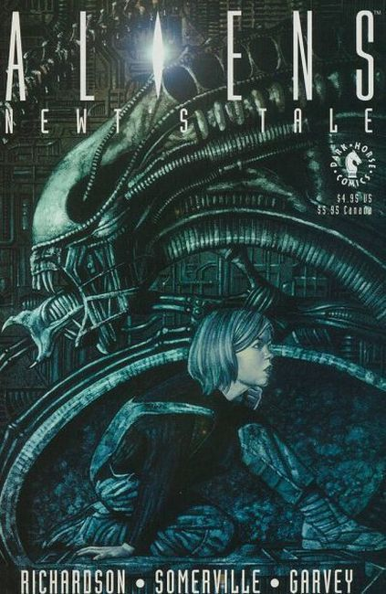
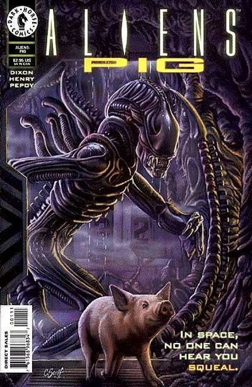
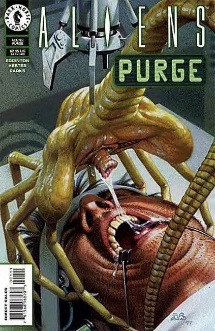
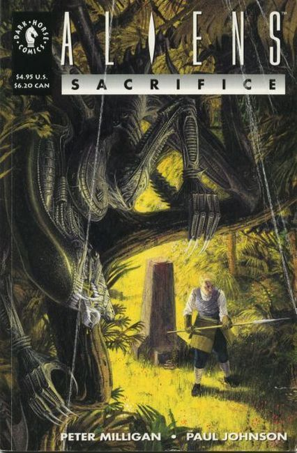
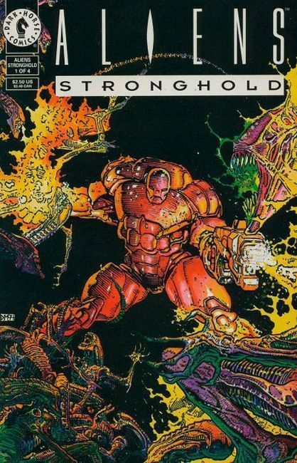
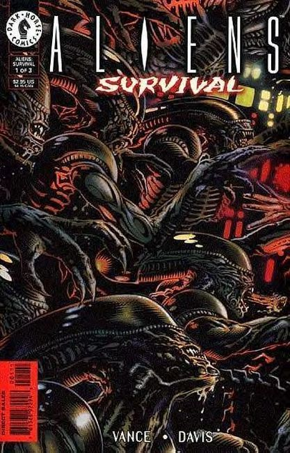
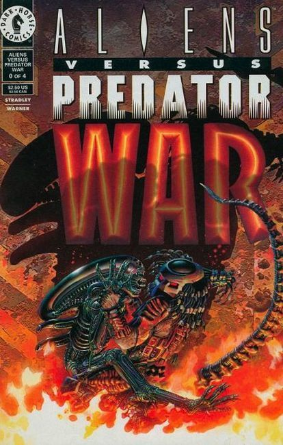
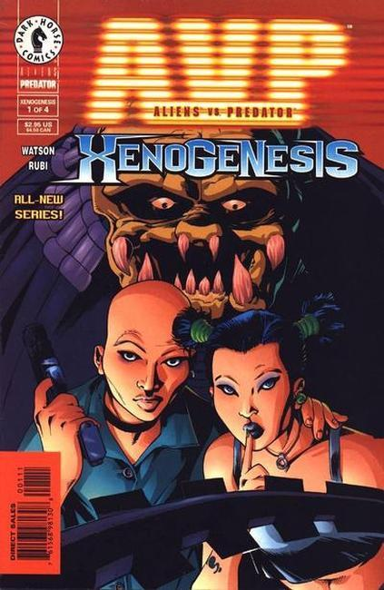
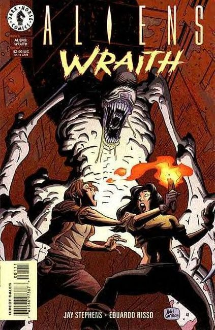
❮
❯
Dark Horse Comics (Darkhorse.com) was founded in 1986 by Mike Richardson as an offshoot of his Oregon comic-book retail chain, Things From Another World. Richardson pursued the idea of establishing an ideal atmosphere for creative professionals, and thirty years later the company has grown to become the third-largest comics publisher in the United States.
In 1980, Mike Richardson used a credit card with a two-thousand-dollar credit limit to open a comic-book store, Pegasus Books, in the small resort town of Bend, Oregon. His intention was to write and illustrate a children’s book himself while working in the store, but the business expanded, and his project was put on hold. He still plans to finish that book.
As business grew, Richardson opened new retail locations in Oregon and Washington State. He soon became frustrated, however, by the lack of quality in the products he was selling, and so, using funds from his retail operation, he began his own publishing company. From the very start Dark Horse Comics was a different kind of publishing house. Writers and artists were treated as partners, an unheard-of generosity in the comic-publishing field at that time. Soon the industry’s top creators were flocking to Dark Horse, where they became involved in the publishing and marketing of their creations.
Dark Horse Comics launched with two initial titles in 1986, Dark Horse Presents and Boris the Bear. Paul Chadwick’s Concrete, about a congressional speechwriter who transforms into a two-thousand-pound cement creature, was a runaway hit and has received twenty-six industry awards and nominations to date. Within one year of its first publication, Dark Horse Comics added nine new titles to its roster, including The American, The Mark, Trekker, and Black Cross.
In 1990, Dark Horse startled the entire industry by teaming up its two hot Fox movie franchises in one comic. Aliens vs. Predator caught the comics industry by surprise, and its success spawned an industry-wide trend. Today, the comic crossover is a staple of the industry. This strategy led directly to a series of crossover projects with industry giant DC Comics. Projects such as Batman versus Predator, Superman/Aliens, and Joker/Mask have been runaway hits.
That same year, Frank Miller (Batman: The Dark Knight Returns) and Dave Gibbons (Watchmen) brought Give Me Liberty to Dark Horse. Later that year, Frank teamed with artist Geof Darrow and released Hard Boiled, again through Dark Horse. The success of these titles, together with Dark Horse’s creator’s-rights platform, led to the signing of talent from the “Big Two” to Dark Horse. High-profile creators such as Mike Mignola, Art Adams, Walt Simonson, John Byrne, and Chris Claremont brought projects to a company other than Marvel and DC for the first time. As a result of this talent movement, the field was opened wide for other creators, leading directly to the formation of numerous “independent” comic-book publishers.
1,001 Nights of Bacchus (1993)
13th Son (2005)
2 Past Midnight (2013)
3 Story: The Secret History of the Giant Man (2009)
300 (1998)
365 Samurai and a Few Bowls of Rice (2009)
3x3 Eyes (1995)
47 Ronin (2012)
9-11: Artists Respond (2002)
Abe Sapien (2013)
Abe Sapien: Drums of the Dead (1998)
Abe Sapien: The Abyssal Plain (2010)
Abe Sapien: The Devil Does Not Jest (2011)
Abe Sapien: The Drowning (2008)
Abe Sapien: The Haunted Boy (2009)
Abyss (1989)
Accident Man (1993)
Adam.3 (2015)
Adventures of Luther Arkwright (1990)
Adventures of Superhero Girl (2013)
Adventures of the Mask (1996)
Aeon Flux (2005)
Age of Reptiles (1993)
Age of Reptiles: Ancient Egyptians (2015)
Age of Reptiles: The Hunt (1996)
Age of Reptiles: The Journey (2009)
Agents of Law (1995)
Akaneiro (2013)
Alabaster: The Good, the Bad, and the Bird (2015)
Alabaster: Wolves (2012)
Aleister & Adolf (2016)
Alice in Sunderland: An Entertainment (2007)
Alien3 (1992)
Alien Resurrection (1997)
Alien vs. Predator: Civilized Beasts (2008)
Alien vs. Predator: Fire and Stone (2014)
Alien vs. Predator: Thrill of the Hunt (2004)
Aliens (1988)
Aliens: Alchemy (1997)
Aliens: Apocalypse – The Destroying Angels (1999)
Aliens: Berserker (1995)
Aliens: Colonial Marines (1994)
Aliens: Countdown (1993)
Aliens: Dead Orbit (2017)
Aliens: Defiance (2016)
Aliens: Earth Angel (1994)
Aliens: Earth War (1990)
Aliens: Fast Track to Heaven (2011)
Aliens: Fire and Stone (2014)
Aliens: Genocide (1992)
Aliens: Glass Corridor (1998)
Aliens: Havoc (1997)
Aliens: Hive (1992)
Aliens: Kidnapped (1998)
Aliens: Labyrinth (1994)
Aliens: Lovesick (1996)
Aliens: Mondo Heat (1996)
Aliens: Mondo Pest (1995)
Aliens: More Than Human (2010)
Aliens: Music of the Spears (1994)
Aliens: Newt's Tale (1992)
Aliens: Pig (1997)
Aliens: Purge (1997)
Aliens: Rogue (1993)
Aliens: Sacrifice (1993)
Aliens: Salvation (1993)
Aliens: Stalker (1998)
Aliens: Stronghold (1994)
Aliens: Survival (1998)
Aliens: Tribes (1992)
Aliens vs. Predator (1990)
Aliens vs. Predator: Booty (1996)
Aliens vs. Predator: Duel (1995)
Aliens vs. Predator: War (1995)
Aliens vs. Predator: Xenogenesis (2000)
Aliens: Wraith (1998)
Aliens: Xenogenesis (1999)
Amala's Blade #0-4 Feb 2013 – Jul (2013)
Amazing Screw-On Head #1 May (2002)
Amazon #1-3 Mar 2009 – May (2009)
American #1-8 Jun 1987 – Feb (1989)
American: Lost in America #1-4 Jul 1992 – Oct (1992)
American Special #1 (1990)
American Splendor #17 Jul (1993)
American Splendor: Bedtime Stories Jun (2000)
American Splendor: Comic-Con Comics Aug (1996)
American Splendor: Music Comics Nov (1997)
American Splendor: Odds &Ends Dec (1997)
American Splendor: On the Job May (1997)
American Splendor: Portrait of the Author in His Declining Years nn Apr (2001)
American Splendor Special: A Step Out of the Nest #1 Aug (1994)
American Splendor: Terminal nn Sep (1999)
American Splendor: Transatlantic Comics nn Jul (1998)
American Splendor: Unsung Hero #1-3 Aug 2002 – Oct (2002)
American Splendor: Windfall #1-2 Sep 1995 – Oct (1995)
Ancient Joe (2001)
Andrew Vachss' Underground (1994)
Angel (2001)
Angel & Faith (2013)
Animal Confidential (1992)
Answer! (2013)
Apocalypse Nerd (2007)
ApocalyptiGirl: An Aria for the End Times (2015)
Appleseed Databook (1994)
ArchEnemies (2006)
Archie vs. Predator (2015)
Army of Darkness (1993)
Atlas (1994)
AutobioGraphix (2003)
Aw Yeah Comics: Action Cat! (2016)
Axe Cop (2012)
B.P.R.D. (2008)
Babe (1994)
Babe 2 (1995)
Badger: Shattered Mirror (1994)
Badlands (1991)
Bakers Meet Jingle Belle (2006)
Barb Wire (1995)
Barry Windsor-Smith: STORYTELLER (1997)
Basil Wolverton's Gateway to Horror (1988)
Basil Wolverton's Planet of Terror (1987)
Batman/Aliens (1997)
Batman/Aliens II (2003)
Batman/Grendel (1996)
Batman/Hellboy/Starman (1999)
Batman/Tarzan: Claws of the Cat-Woman (1999)
Battle Gods: Warriors of the Chaak (2000)
Beasts of Burden (2009)
Bernie Wrightson's Frankenstein (1994)
Bettie Page Comics (1996)
Bettie Page Comics: Spicy Adventure (1997)
Bettie Page: Queen of the Nile (2000)
Big (1989)
Big Blown Baby (1996)
Big Guy and Rusty the Boy Robot (1995)
Billi 99 (1991)
Billy the Kid's Old Timey Oddities (2005)
Black Beetle (2013)
Blackburne Covenant (2003)
Black Cross: Dirty Work (1997)
Black Hammer (2016)
Black Sad (2010)
Blackout (2014)
Blade of the Immortal (2007)
Blue Lily (1993)
BMWFilms.com's The Hire (2005)
Bob Burden's Original Mysterymen Presents (1999)
Body Bags (1996)
Book of Night (1987)
Boris the Bear (1987)
Brain Boy (2013)
Brain Boy: The Men from G.E.S.T.A.L.T. (2014)
Buffy the Vampire Slayer (2002)
Call of Duty (2016)
Captain Midnight (2013)
Catalyst Comix (2014)
Catalyst: Agents of Change (1994)
Cheval Noir (1994)
Chickenhare: Fire in the Hole (2008)
Chickenhare: The House of Klaus (2006)
Chosen (2004)
Chronowar (1997)
City of Others (2007)
Classic Star Wars (1994)
Colder (2013)
Colors in Black (1995)
Comics' Greatest World (1993)
Conan (2008)
Concrete (1988)
Cormac Mac Art (1990)
Corny's Fetish (1998)
Creatures of the Night (2004)
Criminal Macabre (2003)
Creepy Presents Alex Thoth (2015)
Creepy Presents Bernie Wrighton (2011)
Creepy Presents Richard Corben (2012)
Creepy Presents Steve Ditko (2013)
Critical Error (1992)
Cromwell Stone (1992)
Cross (1996)
Crush (2004)
Curse of Dracula (1998)
Damn Nation (2005)
Danger Unlimited (1994)
Dark Horse Book of Hauntings (2003)
Dark Horse Book of Monsters (2006)
Dark Horse Book of The Dead (2005)
Dark Horse Book of Witchcraft (2004)
Dark Horse Classics (1996)
Dark Horse Comics (1994)
Dark Horse Down Under (1994)
Dark Horse Maverick 2000 (2000)
Dark Horse Maverick 2001 (2001)
Dark Horse Monsters (1997)
Dark Horse Presents (1986)
Dark Horse Presents Annual (1998)
Dark Horse Presents Fifth Anniversary Special (1991)
Dark Horse Twenty Years (2006)
Darkness Falls, The Tragic Life of Matilda Dixon (2003)
Dead in the West (1994)
Dead or Alive – A Cyberpunk Western (1998)
Deadlander (2007)
Deadline USA (1992)
A Decade of Dark Horse (1996)
Dept H (2016)
Devil's Footprints (2003)
Diablo: Tales of Sanctuary (2001)
Digimon Digital Monsters (2000)
Dirty Pair (1993)
Division 13 (1995)
Doc Savage: Curse of the Fire God (1995)
Doc Stearn...Mr. Monster (1988)
Dollhouse (2010)
Dominion (1993)
DOTA 2 (2017)
Dr. Giggles (1992)
Dr. Robot Special (2000)
Drawing on Your Nightmares (2003)
Edgar Rice Burroughs' Jungle Tales of Tarzan (2015)
Edgar Rice Burroughs' Tarzan: A Tale of Mugambi (1995)
Edgar Rice Burroughs' Tarzan: The Lost Adventure (1995)
Edgar Rice Burroughs' The Return of Tarzan (1997)
Elric: Stormbringer (1997)
El Zombo Fantasma (2004)
Emily Strange (2010)
Empowered (2007)
End League (2009)
Escapists (2006)
Evil Dead (2008)
F5 (2001)
Fax from Sarajevo (1998)
Fear Agent #17-21 Nov 2007 – Jun (2008)
Fear Agent: I Against I #1-2 (#22-23) Jun 2008 – Jul (2009)
Fear Agent: The Last Goodbye #1-4 (#12-15) Jun – Sep (2007)
Fierce #1-4 Jul – Dec (2004)
Fifth Beatle nn Nov (2013)
Flaming Carrot Annual #1 Jan (1997)
Flaming Carrot Comics #18-31 Jun 1988 – Oct (1994)
Flaming Carrot &Reid Fleming, World's Toughest Milkman (2002)
Flaxen #1 undated (Jul 1992)
Floaters #1-5 Sep 1993 – Jan (1994)
Foot Soldiers #1-4 Jan – Apr (1996)
Fort: Prophet of the Unexplained #1-4 Jun – Sep (2002)
Fray #1-8 Jun 2001 – Jul (2003)
Freaks' Amour #1-3 Jul – Nov (1992)
Freaks of the Heartland #1-6 Jan – Nov (2004)
Free Comic Book Day nn Apr (2007)
Free Comic Book Day: Project Black Sky nn May (2014)
Fused #1-4 Dec 2003 – Mar (2004)
Galactic #1-3 Aug – Oct (2003)
Gamera #1-4 Aug – Nov (1996)
Gary Gianni's The MonsterMen nn Aug (1999)
Ghost #1-36 Apr 1995 – Apr (1998)
Ghost and The Shadow nn Dec (1995)
Ghost/Batgirl #1-4 Aug – Dec (2000)
Ghost Handbook nn Aug (1999)
Ghost/Hellboy Special #1-2 May – Jun (1996)
Ghost in the Shell #1-8 Mar – Oct (1995)
Ghost in the Shell 1.5: Human-Error Processor #1-8 Oct 2006 – May (2007)
Ghost in the Shell 2: Man-Machine Interface #1-11 Jan – Dec (2003)
Ghost Special nn Jul (1994)
GIANTS #1 Dec (2017)
GI Joe #1-4 Dec 1995 – Apr (1996)
Girl Crazy #1-3 May – Jul (1996)
Give Me Liberty #1-4 Jun 1990 – Apr (1991)
Go Boy 7 #1-6 Jul 2003 – Mar (2004)
God of War #0-4 April 2018 – Feb (2019)
Godzilla #1-6 May 1988 – Jan (1989)
Godzilla Color Special #1 Summer (1992)
Godzilla, King of the Monsters Special #1 Aug (1987)
Godzilla vs. Barkley nn Dec (1993)
Godzilla Versus Hero Zero #1 Jul (1995)
Goon #1-44 Jun 2003 – Nov (2013)
Goon Noir #1-3 Sep 2006 – Jan (2007)
Goon 25¢ Edition nn Sep (2005)
Grandville nn Oct (2009)
Green Lantern Versus Aliens #1-4 Sep – Dec (2000)
Grendel: Behold the Devil #0 Jul (2007)
Grendel: Black, White, &Red #1-4 Nov 1998 – Feb (1999)
Grendel Classics #1-2 Jul – Aug (1995)
Grendel Cycle nn Oct (1995)
Grendel: Devil by the Deed nn Dec (1997)
Grendel: Devil Child #1-2 Jun – Aug (1999)
Grendel: Devil's Legacy #1-12 Mar 2000 – Feb (2001)
Grendel: Devil's Reign #1-7 May – Dec (2004)
Grendel: God and the Devil #0-10 Jan – Dec (2003)
Grendel: Red, White, &Black #1-4 Sep – Dec (2002)
Grendel Tales: Devils and Deaths #1-2 Oct – Nov (1994)
Grendel Tales: Devil's Choices #1-4 Aug (1999)
Grendel Tales Featuring Devil's Hammer #1-3 Feb – Apr (1994)
Grendel Tales: Four Devils, One Hell #1-6 Aug 1993 – Jan (1994)
Grendel Tales: Homecoming #1-3 Dec 1994 – Feb (1995)
Grendel Tales: The Devil in Our Midst #1-5 May – Sep (1994)
Grendel Tales: The Devil May Care #1-6 Dec 1995 – May (1996)
Grendel Tales: The Devil's Apprentice #1-3 Sep – Nov (1997)
Grendel: The Devil Inside #1-3 Sep 19 – Nov 21 (2001)
Grendel: War Child #1-10 Aug 1992 – Jun (1993)
Grifter and The Mask #1-2 Sep (1996)
Guild #1-3 Mar – May (2010)
Halloween Legion nn Sep (2013)
Halo: Escalation #1-24 Dec 2013 – Nov (2015)
Halo: Initiation #1-3 Aug – Oct (2013)
Hammer #1-4 Oct 1997 – Jan (1998)
Hammer: The Outsider #1-4 Feb – Apr (1999)
Happy Birthday Martha Washington nn Mar (1995)
Hard Boiled #1-3 Sep 1990 – Mar (1992)
Harlan Ellison's Dream Corridor #1-5 Mar – Jul (1995)
Harlan Ellison's Dream Corridor Quarterly #1 Aug (1996)
Harlan Ellison's Dream Corridor Special nn Jan (1995)
Harlequin Valentine nn Nov (2001)
Harrow County #1-on May (2016)
Haunted Man #1 Mar (2000)
Heartbreakers #1-4 Apr – Jul (1996)
Heart of Empire #1-9 Apr – Dec (1999)
Hell #1-4 Jul 2003 – Mar (2004)
Hellboy: Almost Colossus #1-2 (#12-13) Jun – Jul (1997)
Hellboy Animated: The Black Wedding nn Jan (2007)
Hellboy Animated: The Menagerie nn Nov (2007)
Hellboy Animated: The Yearning nn May (2007)
Hellboy: Box Full of Evil #1-2 (#15-16) Aug – Sep (1999)
Hellboy Christmas Special nn (#14) Dec (1997)
Hellboy: Conqueror Worm #1-4 (#17-20) May – Aug (2001)
Hellboy: Darkness Calls #1-6 (#27-32) Apr – Nov (2007)
Hellboy: Free Comic Book Day nn Apr (2008)
Hellboy, Jr. #1-2 Oct – Nov (1999)
Hellboy, Jr., Halloween Special nn Oct (1997)
Hellboy: Makoma Feb (2006)
Hellboy Premiere Edition nn undated (2004)
Hellboy: Seed of Destruction #1-4 Mar – Jun (1994)
Hellboy, The Corpse nn Mar (2004)
Hellboy: The Corpse and the Iron Shoes nn (#6) (1996)
Hellboy: The Crooked Man #1-3 (#33-35) Jul – Sep (2008)
Hellboy: The Golden Army nn Jan (2008)
Hellboy: The Island #1-2 (#23-24) Jun – Jul (2005)
Hellboy: The Third Wish #1-2 (#21-22) Jul – Aug (2002)
Hellboy: Wake the Devil #1-5 (#7-11) Jun – Oct (1996)
Hellboy: Weird Tales #1-8 Feb 2003 – Apr (2004)
Hellgate: London May/Oct 2006 –( 200)
Hellhounds: Panzer Cops #1-6 Jan – Jul (1994)
Helm #1-4 Jul – Nov (2008)
Heretic #1-4 Nov 1996 – Mar (1997)
Hero Zero #0 Sep (1994)
H.G. Wells' The War of the Worlds nn (2006)
Hieroglyph #1-4 Nov 1999 – Feb (2000)
Hound of the Baskervilles nn Feb (2013)
House of Gold &Bones #1-4 Apr – Jul (2013)
Horror of Collier County #1-5 Oct 1999 – Feb (2000)
House of Night #1-5 Nov 2011 – Mar (2012)
Hunchback of Notre Dame nn Jul (2012)
Hungry Ghosts #1-on Jan (2018)
HyperSonic #1-4 Nov 1997 – Feb (1998)
Illegal Alien nn Jun (2003)
Incognegro nn Feb (2018)
Incognegro: Renaissance #1-5 Feb (2018)
Incredibles #1-4 Nov 2004 – Feb (2005)
Indiana Jones Adventures Vol. 1-2 Jun 1998 – Sep (2009)
Indiana Jones and the Arms of Gold #1-4 Feb – May (1994)
Indiana Jones and the Fate of Atlantis #1-4 Mar – Sep (1991)
Indiana Jones and the Golden Fleece #1-2 Jun – Jul (1994)
Indiana Jones and the Iron Phoenix #1-4 Dec 1994 – Mar (1995)
Indiana Jones and the Kingdom of the Crystal Skull #1-2 May (2008)
Indiana Jones and the Sargasso Pirates #1-4 Dec 1995 – Mar (1996)
Indiana Jones and the Shrine of the Sea Devil #1 Sep (1994)
Indiana Jones and the Spear of Destiny #1-4 Apr – Jul (1995)
Indiana Jones and the Tomb of the Gods #1-4 Jun 2008 – Mar (2009)
Indiana Jones: Thunder in the Orient #1-6 Sep 1993 – Apr (1994)
Instant Piano #1-4 Aug 1994 – Feb (1995)
Invisible Kingdom #1-5 Mar (2019)
James Bond 007: A Silent Armageddon #1-2 (1993)
James Bond 007: Serpent's Tooth #1-3 Jul 1992 – Feb (1993)
James Bond 007: Shattered Helix #1-2 Jun – Jul (1994)
James Bond 007: The Quasimodo Gambit #1-3 Jan – May (1995)
Jingle Belle #1-4 Nov 2004 – Apr (2005)
Jingle Belle: The Fight Before Christmas nn Dec (2005)
John Byrne's 2112 nn Nov (1991)
John Byrne's Next Men #0-30 Jan 1992 – Dec (1994)
Judge Dredd vs. Aliens #1-4 Mar – Jun (2003)
Karas nn Nov (2004)
Kickback nn Aug (2006)
King Kong: The 8th Wonder of the World #1 Dec (2005)
King Tiger #1-4 Aug - Nov (2015)
King Tiger &Motorhead #1-2 Aug – Sep (1996)
Kingdom of the Wicked nn Dec (2004)
Kings of the Night #1-2 May – Jun (1989)
Kiss #1-13 Jun 2002 – Sep (2003)
Kull #1-6 Nov 2008 – May (2009)
Last Man Standing: Killbook of a Bounty Hunter nn Nov (2013)
Last of Us: American Dreams #1-4 Apr – Jul (2013)
Last Train to Deadsville: A Cal McDonald Mystery #1-4 (#7-10) May – Sep (2004)
Legend of Korra: Turf Wars #1-3 July (2017)
Legend of Mother Sarah #1-8 Apr – Nov (1995)
Legend of Mother Sarah: City of the Angels #1-9 Oct 1996 – Jul (1998)
Legend of Mother Sarah: City of the Children #1-7 Jan – Jul (1996)
Let Me In: Crossroads #1-4 Dec 2010 – Mar (2011)
Living with the Dead #1-3 Oct – Nov (2007)
Lobo/The Mask #1-2 (2008)
Lobster Johnson: The Iron Prometheus #1-5 Sep 2007 – Jan (2008)
Lone #1-6 Sep 2003 – Mar (2004)
Lone Gunmen #1 Jun (2001)
Lone Wolf 2100 #1-11 May 2002 – Dec (2003)
Lone Wolf 2100: The Red File nn Jan (2003)
Lords of Misrule #1-6 Jan – Jun (1997)
Lost in Space #1-3 Apr – Jul (1998)
Love Me Tenderloin: A Cal McDonald Mystery nn (#6) Jan (2004)
Machine #1-4 Nov 1994 – Feb (1995)
Madman Comics #1-20 Apr 1994 – Dec (2000)
Madman/The Jam #1-2 Jul – Aug (1998)
Magic: The Gathering: Gerrard's Quest #1-4 Mar – Sep (1998)
Manga Darkchylde #1-2 Feb – Mar (2005)
Manga Darkchylde Zero nn Jul (2004)
Man with the Screaming Brain #1-4 Apr – Jul (2005)
Mark #1-4 Dec 1993 – Mar (1994)
Marshal Law: Secret Tribunal (1992)
Marshal Law: Super Babylon nn May (1992)
Martha Washington Dies nn Jul (2007)
Martha Washington: Stranded in Space nn Nov (1995)
Mask #1-17 Aug – Oct 1991 – (1998)
Mask/Marshal Law #1-2 Feb – Mar (1998)
Mask Returns #1-4 Oct 1992 – Mar (1993)
Mask: Toys in the Attic #1-4 Aug – Nov (1998)
Mask: Virtual Surreality nn Jul (l997)
Massive #1-30 Jun 2012 – Dec (2014)
Mata Hari #1-on Feb (2018)
Mayhem #1-4 May – Sep (1989)
Mecha Special #1 May (1995)
Medal of Honor #1-4 Oct 1994 – Jan (1995)
Mezz: Galactic Tour 2494 nn May (1994)
Michael Chabon Presents The Amazing Adventures of The Escapist (1994)
Milkman Murders #1-4 Jun – Oct (2004)
MIND MGMT #0-36 May 2012 – May (2015)
Monkeyman &O'Brien #1-3 Jul – Sep (1996)
Monkeyman and O'Brien Special nn Feb (1996)
Moth #1-4 Apr – Jul (2004)
Moth – Special nn Mar (2004)
Motorhead #1-6 Aug 1995 – Jan (1996)
Motorhead Special #1 Mar (1994)
My Name Is Bruce nn Sep (2008)
Myst #0 Aug (1997)
Myst: The Book of the Black Ships #1 Aug (1997)
Mystery Men Movie Adaptation #1-2 Jul – Aug (1999)
Mystery Science Theater 3000 #1-6 September 12, 2018 - March 13, (2019)
Nail #1-4 Jun – Oct (2004)
Neil Gaiman's Murder Mysteries nn Jun (2002)
Nevermen #1-4 May – Aug (2000)
Nevermen: Streets of Blood #1-3 Jan – Apr (2003)
New Two-Fisted Tales nn (1993)
Nexus #89-102 Jun 1996 – Oct (2009)
Nexus: Alien Justice #1-3 Dec 1992 – Feb (1993)
Nexus Meets Madman nn May (1996)
Nexus the Liberator #1-4 Aug – Nov (1992)
Nexus: The Origin nn Jul (1992)
Nexus: The Wages of Sin #1-4 Mar – Jun (1995)
Nickelodeon Avatar: The Last Airbender nn May (2011)
Nickelodeon Avatar: The Last Airbender – The Art of the Animated Series nn May (2010)
Nickelodeon Avatar: The Last Airbender – The Poster Collection nn Aug (2015)
Nickelodeon Avatar: The Last Airbender – The Promise #1-3 Jan 2012 – Sep (2012)
Nickelodeon Avatar: The Last Airbender – The Rift #1-3 Mar 2014 – Nov (2014)
Nickelodeon Avatar: The Last Airbender – The Search #1-3 Mar 2013 – Oct (2013)
Nickelodeon Avatar: The Last Airbender – Smoke and Shadow #1-3 Sep 2015 – Mar (2016)
Nocturnals: Witching Hour nn May (1998)
Occultist (2010)
Oh My Goddess! #1-112 (1995)
Oh My Goddess! Part II #1-8 Feb – Sep (1995)
Oh My Goddess! Part III #1-6 Apr – Sep (1996)
Oh My Goddess! Part IV #1-8 Dec 1996 – Jul (1997)
Oh My Goddess! Part V #1-12 Sep 17, 1997 – Sep 2, (1998)
Oh My Goddess! Part VI #1-6 Nov 4, 1998 – Apr 7, (1999)
Oh My Goddess! Part VI #1-8 May 5 – Dec 1, (1999)
Oh My Goddess! Part VIII #1-7 Jan 5 – Jul (2000)
Oh My Goddess! Part IX #1-7 Jul 5, 2000 – Jan 3, (2001)
Oh My Goddess! Part X #1-5 Feb 28 – Sep 19, (2001)
Oh My Goddess! Part XI #1-10 Nov 21, 2000 – May 8, (2002)
Oktane #1-4 Aug – Nov (1995)
Oni #1-3 Feb – Apr (2001)
Orion #1-6 Sep 1992 – Jul (1993)
Outer Orbit #1-4 Dec 2006 – May (2007)
Outlanders (1988)
Outlanders Epilogue nn Mar (1994)
Outlanders Special #1 Mar (1993)
Outlaw 7 #1-3 Aug 2001 – Jan (2002)
Out of the Vortex #1-12 Oct 1993 – Oct (1994)
Penny Arcade 1x25¢ Edition nn Dec (2005)
Perhapanauts #1-4 Nov 2005 – Feb (2006)
Perhapanauts: Second Chances #1-4 Oct 2006 – Jan (2007)
Pigeons from Hell #1-4 Apr – Jul (2008)
Planet of the Apes nn May (2001)
Polar #1-3 (2013)
Predator #1-4 Jun (1989)
Predator: Bad Blood #1-4 Dec 1993 – Jun (1994)
Predator: Big Game #1-4 Mar – Jun (1991)
Predator Bloody Sands of Time #1-2 Feb (1992)
Predator: Captive nn Apr (1998)
Predator: Cold War #1-4 Sep – Dec (1991)
Predator: Dark River #1-4 Jul – Oct (1996)
Predator: Hell Come A-Walkin' #1-2 Feb – Mar (1998)
Predator: Homeworld #1-4 Mar – Jun (1999)
Predator: Invaders from the Fourth Dimension nn Aug (1994)
Predator: Kindred #1-4 Dec 1996 – Mar (1997)
Predator: Nemesis #1-2 Dec (1997)
Predator: Primal #1-2 Jul – Aug (1997)
Predator: Race War #1-4 Feb – Oct (1993)
Predator: Strange Roux nn Nov (1996)
Predator 2 #1-2 Feb – Jun (1991)
Predator Versus Judge Dredd #1-3 Oct – Dec (1997)
Predator vs Judge Dredd vs Aliens #1-4 July – October (2016)
Predator vs. Magnus Robot Fighter #1-2 Nov 1992 – (1993)
Predator: Xenogensis #1-4 Aug – Nov (1999)
Primal #1-2 Oct – Dec (1992)
Primal: From the Cradle to the Grave nn (1992)
Propellerman #1-8 Jan (1993)
Proto Tykes Holiday Special/Hero Illustrated Holiday Special #2 Dec (1994)
Pubo #1-3 Nov 2002 – Mar 26, (2003)
Randy Bowen's Decapitator #1-4 Jun – Sep (1998)
Rascals in Paradise #1-3 Aug – Dec (1994)
Real Adventures of Jonny Quest #1-12 Sep 1996 – Sep 3 (1997)
Red Rocket 7 #1-7 Aug 1997 – Jun (1998)
Resident Alien #0-3 Apr 2011 – Jul (2011)
Resident Alien: The Suicide Blonde #0-3 Aug 2013 – Nov (2013)
Resident Alien: The Sam Hain Mystery #0-3 Apr 2015 – Jul (2015)
Return of the Gremlins #1-3 Mar – May (2008)
Revelations #1 Mar 1995 – (2006)
Rex Mundi Vol. 2 #1-19 Aug 2006 – Aug (2009)
Ring of Roses #1-4 Nov (1992)
Ring of the Nibelung #1-4 Feb – May (2000)
R.I.P.D. #1-4 Oct 1999 – Jan (2000)
Ripley's Believe It or Not! #1-3 May – Dec (2002)
Roachmill #1-10 May 1988 – Dec (1990)
RoboCop: Mortal Coils #1-4 Sep – Dec (1993)
RoboCop: Prime Suspect #1-4 Oct 1992 – Jan (1993)
RoboCop: Roulette #1-4 Dec 1993 – Mar (1994)
RoboCop 3 #1-3 Jul – Nov (1993)
RoboCop Versus The Terminator #1-4 (1992)
Rocket Comics: Ignite #1 Apr (2003)
Rocketeer Adventure Magazine #3 Jan (1995)
Samurai: Heaven &Earth #1-5 Dec 2004 – Dec (2005)
Samurai: Heaven &Earth Volume II #1-5 Nov 2006 – Jun (2007)
San Diego Comic-Con Comics #1-4 Aug 1992 – Jul (1995)
Satan's Sodomy Baby nn Apr (2007)
Satsuma Gishiden nn Sep (2006)
Scarlet Traces: The Great Game #1-4 Jul – Oct (2006)
Scatterbrain #1-4 Jun – Sep (1998)
Scorpion King #1-2 Mar – Apr (2002)
Scream #1-4 Nov 2007 – Feb (2008)
A Second Chance at Sarah #1 Feb (2010)
Secret #1-4 Feb – May (2007)
Secret Files of Project Black Sky #1-5 May - Sep (2014)
Seeds (2012)
Serenity #1-3 Jul – Sep (2005)
Serenity: Better Days #1-3 Mar – May (2008)
Sergio Aragonés' Actions Speak #1-6 Jan – Jun (2001)
Sergio Aragonés' Blair Which? nn Dec (1999)
Sergio Aragonés' Boogeyman #1-4 Jun – Sep (1998)
Sergio Aragonés' Día de Los Muertos nn Oct (1998)
Sergio Aragonés' Groo #1-4 Jan – Apr (1998)
Sergio Aragonés' Groo and Rufferto #1-4 Dec 1998 – Mar (1999)
Sergio Aragonés' Groo: Death &Taxes #1-4 Dec 2001 – Apr (2002)
Sergio Aragonés Groo: Hell on Earth #1-4 Nov 2007 – Apr (2008)
Sergio Aragonés' Groo: Mightier than the Sword #1-4 Jan – Apr (2000)
Sergio Aragonés Groo: 25th Anniversary Special nn Aug (2007)
Sergio Aragonés' Louder Than Words #1-6 Jul – Dec (1997)
Sergio Aragonés Stomps Star Wars nn Jan (2000)
Shadow #1-2 Jun – Jul (1994)
Shadow and Doc Savage #1-2 Jul – Aug (1995)
Shadow and the Mysterious 3 #1 Sep (1994)
Shadow: In the Coils of the Leviathan #1-4 Oct 1993 – Apr (1994)
Shadow Empires: Faith Conquers #1-4 Aug – Nov (1994)
Shadow Lady #1-24 Apr 1998 – Sep (2000)
Shadow Lady Special nn Oct (2000)
Shi: Ju-Nen #1-4 Jul 2004 – May (2005)
Shinobi #1 Aug (2002)
Shrek #1-3 Sep – Dec (2003)
Silke #1-4 Jan – Sep (2001)
Sin City: A Dame to Kill For #1-6 Nov 1993 – May (1994)
Sin City: Family Values nn Oct (1997)
Sin City: Hell and Back #1-9 Jul 1999 – Apr (2000)
Sin City: Just Another Saturday Night 1997 -( 199)
Sin City: Lost, Lonely, &Lethal nn Dec (1996)
Sin City: Sex &Violence nn Mar (1997)
Sin City: Silent Night nn Nov (1995)
Sin City: That Yellow Bastard #1-6 Feb – Jul (1996)
Sin City: The Babe Wore Red and Other Stories nn Nov (1994)
Sin City: The Big Fat Kill #1-5 Nov 1994 – Mar (1995)
Skyman #1-4 Jan - Apr (2014)
Sock Monkey #1-2 Sep – Oct (1998)
Sock Monkey: The Inches Incident #1-4 Sep 2006 – Apr (2007)
Solomon Kane #1-5 Sep 2008 – Feb (2009)
Space Circus #1-4 Jul – Oct (2000)
Spacehawk #1-5 1989 – Jan (1993)
Space Usagi #1-3 Jan – Mar (1996)
Speak of the Devil #1-6 Jul 2007 – May (2008)
Species #1-4 Jun – Sep (1995)
Species: Human Race #1-4 Nov 1996 – Feb (1997)
Spirit of Wonder #1-5 Apr – Aug (1996)
SpyBoy #1-17 Oct 1999 – May (2003)
SpyBoy: Final Exam #1-4 May – Aug (2004)
SpyBoy/Young Justice #1-3 Feb – Apr (2002)
SpyBoy Special #1 May (2002)
Star Slammers Special nn Jun (1996)
Star Wars #1-45 Oct (1992)
Star Wars: A Valentine Story nn Feb (2003)
Star Wars Adventures #1-6 Apr 2009 – Sep (2011)
Star Wars: Boba Fett #1-3 Dec 1995 – Aug (1997)
Star Wars: Boba Fett — Agent of Doom nn Nov (2000)
Star Wars: Boba Fett — Enemy of the Empire #1-4 Jan – Apr (1999)
Star Wars: Boba Fett — Overkill nn Mar (2006)
Star Wars: Boba Fett — Twin Engines of Destruction nn Jan (1997)
Star Wars: Chewbacca #1-4 Jan – Apr (2000)
Star Wars: Clone Wars Adventures Vol. 1-10 Jul 2004 – Dec (2007)
Star Wars: Crimson Empire #1-6 Dec 1997 – May (1998)
Star Wars Crimson Empire II: Council of Blood #1-6 Nov 1998 – Apr (1999)
Star Wars: Dark Empire #1-6 Dec 1991 – Oct (1992)
Star Wars: Dark Empire II #1-6 Dec 1994 – May (1995)
Star Wars: Dark Empire – Preview nn Mar (1996)
Star Wars: Dark Force Rising #1-6 May – Oct (1997)
Star Wars: Dark Forces – Soldier for the Empire nn Apr (2007)
Star Wars: Dark Times #0-17 (#84-100) Oct 2006 – Jun (2010)
Star Wars: Darth Maul #1-4 Sep – Dec (2000)
Star Wars: Droids #1-6 Apr – Sep (1994)
Star Wars: Droids Special #1 Jan (1995)
Star Wars: Empire #1-40 Sep 2002 – Feb (2006)
Star Wars: Empire's End #1-2 Oct – Nov (1995)
Star Wars: Episode I Anakin Skywalker nn May (1999)
Star Wars: Episode I Obi-Wan Kenobi nn May (1999)
Star Wars: Episode I Queen Amidala nn May (1999)
Star Wars: Episode I Qui-Gon Jinn nn May (1999)
Star Wars: Episode I The Phantom Menace May (1999)
Star Wars: Episode II – Attack of the Clones #1-4 Apr – May (2002)
Star Wars: Episode III – Revenge of the Sith #1-4 May (2005)
Star Wars – Free Comic Book Day 2005 Special nn May (2005)
Star Wars – Free Comic Book Day 2006 Special nn May (2006)
Star Wars: General Grievous (2005)
Star Wars Handbook (1998)
Star Wars Hasbro/Toys "R" Us Exclusive (2002)
Star Wars: Heir to the Empire (1996)
Star Wars: Infinities – A New Hope (2001)
Star Wars: Infinities – Return of the Jedi(2004)
Star Wars: Infinities – The Empire Strikes Back (2002)
Star Wars: Invasion – Refugees (2009)
Star Wars: Invasion Rescues (2010)
Star Wars: Jabba the Hut (1995)
Star Wars: Jabba the Hut – Betrayal (1996)
Star Wars: Jabba the Hut – The Dynasty Trap (1995)
Star Wars: Jabba the Hut – The Hunger of Princess Nampi (1995)
Star Wars: Jango Fett (2002)
Star Wars: Jango Fett — Open Seasons (2002)
Star Wars: Jedi – Aayla Secura nn Aug (2003)
Star Wars: Jedi Academy – Leviathan (1999)
Star Wars: Jedi Council: Acts of War (2000)
Star Wars: Jedi – Count Dooku (2003)
Star Wars: Jedi – Mace Windu (2003)
Star Wars: Jedi Quest (2001)
Star Wars: Jedi – Shaak Ti (2003)
Star Wars: Jedi vs. Sith (2001)
Star Wars: Jedi – Yoda (2004)
Star Wars Knights of the Old Republic (2010)
Star Wars Knights of the Old Republic Handbook(2007)
Star Wars Knights of the Old Republic/Rebellion (2006)
Star Wars: Legacy (2010)
Star Wars: Mara Jade (1999)
Star Wars: Obsession (2005)
Star Wars: Panel to Panel (2004)
Star Wars: Purge (2005)
Star Wars: Qui-Gon &Obi-Wan – Last Stand on Ord Mantell (2001)
Star Wars: Qui-Gon &Obi-Wan – The Aurorient Express (2002)
Star Wars: Rebellion (2008)
Star Wars: Republic (2006)
Star Wars: River of Chaos (1995)
Star Wars: Shadows of the Empire (1996)
Star Wars: Shadows of the Empire — Evolution (1998)
Star Wars: Shadow Stalker (1997)
Star Wars: Splinter of the Mind's Eye (1996)
Star Wars: Starfighter — Crossbones r (2002)
Star Wars: Tag &Bink Are Dead (2001)
Star Wars: Tag &Bink II (2006)
Star Wars Tales (2005)
Star Wars Tales – A Jedi's Weapon y (2002)
Star Wars: Tales from Mos Eisley (1996)
Star Wars: Tales of the Jedi (1994)
Star Wars: Tales of the Jedi—Dark Lords of the Sith, Book One (1995)
Star Wars: Tales of the Jedi — Redemption (1998)
Star Wars: Tales of the Jedi – The Fall of the Sith Empire (1997)
Star Wars: Tales of the Jedi—The Freedon Nadd Uprising (1994)
Star Wars: Tales of the Jedi – The Golden Age of the Sith (1997)
Star Wars: Tales of the Jedi—The Sith War (1996)
Star Wars: The Bounty Hunters—Aurra Sing one-shot (1999)
Star Wars—The Bounty Hunters: Kenix Kil one-shot (1999)
Star Wars: The Bounty Hunters—Scoundrel's Wages (1999)
Star Wars: The Clone Wars (2008)
Star Wars: The Clone Wars–Shipyards of Doom (2008)
Star Wars: The Force Unleashed (2008)
Star Wars: The Jabba Tape (1998)
Star Wars: The Last Command (1998)
Star Wars: The Protocol Offensive (1997)
Star Wars: Underworld – The Yavin Vassilika (2000)
Star Wars: Union (1999)
Star Wars: Vader's Quest (1999)
Star Wars Visionaries (2005)
Star Wars: X-Wing Rogue Squadron (1998)
Star Wars X-Wing Rogue Squadron: Rogue Leader (2005)
Star Wars: Zam Wesell (2002)
Starship Troopers (1997)
Starship Troopers: Brute Creations (1997)
Starship Troopers: Dominant Species (1998)
Starship Troopers: Insect Touch (1997)
Strain (2013)
Strain: The Fall (2014)
Strain: The Night Eternal (2015)
SubHuman (1998)
Superman Aliens 2: God War (2002)
Superman and Batman vs. Aliens and Predator (2007))
Superman/Madman Hullabaloo! (1997)
Superman/Tarzan: Sons of the Jungle (2001)
Superman vs. Aliens (1995)
Superman vs. Predator (2000)
Superman vs. The Terminator: Death to the Future (2000)
Syn (2004)
Tale of One Bad Rat (1995)
Tales of the Fear Agent: Twelve Steps in One (2007)
Tales of the Vampires (2004)
Tales to Offend (1997)
Tank Girl (1991)
Tank Girl 2 (1993)
Tarzan (1998)
Tarzan/Carson of Venus (1998)
Tarzan/John Carter: Warlords of Mars (1996)
Tarzan the Savage Heart (1999)
Tarzan vs. Predator at the Earth's Core (1996)
Tenth: Resurrected (2002)
Terminator (1990)
Terminator: Endgame (1992)
Terminator: Hunters and Killers (1992)
Terminator: One Shot nn Jul (1991)
Terminator: Secondary Objectives t (1991)
Terminator: The Dark Years (1999)
Terminator: The Enemy Within (1992)
Territory #1-4 Jan – Apr (1999)
Thing (From Another World) (1991)
Thing from Another World: Climate of Fear (1992)
Thing from Another World: Eternal Vows (1994)
Thirteen O'Clock (1992)
Timecop (1994)
Titan A.E. (2000)
Titan Special (1994)
Tongue*Lash (1996)
Tongue*Lash II (1999)
Tony Millionaire's Sock Monkey (1999)
Torch of Liberty Special (1995)
Trekker (1987)
Trekker Color Special (1989)
Trigun Anime Manga: Wolfwood (2003)
Truth (1999)
Ultraman Tiga (2004)
Umbrella Academy: Apocalypse Suite (2008)
Umbrella Academy: Dallas (2009)
Urban Legends (1993)
Usagi Yojimbo (1996)
Usagi Yojimbo Color Special (1997)
Van Helsing: From Beneath the Rue Morgue (2004)
Venus Wars (1992)
Venus Wars II (1993)
Virus (1992)
Wacky Squirrel (1988)
Walter (1996)
Warrior of Waverly Street (1996)
Who Wants to Be a Superhero? Free Comics Book Day Preview (2007)
Will to Power (1994)
Witchblade/Aliens/The Darkness/Predator (2001)
Wolf &Red (1995)
World Below (1999)
World Below: Deeper and Stranger (2000)
Wyrd (2019)
X (1996)
X/Hero Illustrated Special (1994)
X: One Shot to the Head (1994)
Xena: Warrior Princess (2000)
Xena: Warrior Princess – Blood and Shadows (2001)
Xena: Warrior Princess – Slave nn Oct (2000)
Xena: Warrior Princess – The Warrior Way of Death (2000)
You Deserved It (2005)
You're Under Arrest (1996)
Young Cynics' Club (1993)
Young Indiana Jones Chronicles (1993)
Zero Killer (2009)
ZombieWorld: Champion of the Worms (1997)
ZombieWorld: Dead End (1998)
ZombieWorld: Eat Your Heart Out (1998)
ZombieWorld: Home for the Holidays (1997)
ZombieWorld: Tree of Death (1999)
ZombieWorld: Winter Dregs (1998)
Zone (1990)


{kind=link}
{kind=link}
{kind=link}
{kind=link}
{kind=link}
{kind=link}
{kind=link}
{kind=link}
{kind=link}
{kind=link}
{kind=link}
{kind=link}
{kind=link}
{kind=link}
{kind=link}
{kind=link}
{kind=link}
{kind=link}
{kind=link}
{kind=link}
{kind=link}
{kind=link}
{kind=link}
{kind=link}
{kind=link}
{kind=link}
{kind=link}
{kind=link}
{kind=link}
{kind=link}
{kind=link}
{kind=link}
{kind=link}
{kind=link}
{kind=link}
{kind=link}
{kind=link}
{kind=link}
{kind=link}
{kind=link}
{kind=link}
{kind=link}
{kind=link}
{kind=link}
{kind=link}
{kind=link}
{kind=link}
{kind=link}
{kind=link}
{kind=link}
{kind=link}
{kind=link}
{kind=link}
{kind=link}
{kind=link}
{kind=link}
{kind=link}
{kind=link}
{kind=link}
{kind=link}
{kind=link}
{kind=link}
{kind=link}
{kind=link}
{kind=link}
{kind=link}
{kind=link}
{kind=link}
{kind=link}
{kind=link}
{kind=link}
{kind=link}
{kind=link}
{kind=link}
{kind=link}
{kind=link}
{kind=link}
{kind=link}
{kind=link}
{kind=link}
{kind=link}
{kind=link}
{kind=link}
{kind=link}
{kind=link}
{kind=link}
{kind=link}
{kind=link}
{kind=link}
{kind=link}
{kind=link}